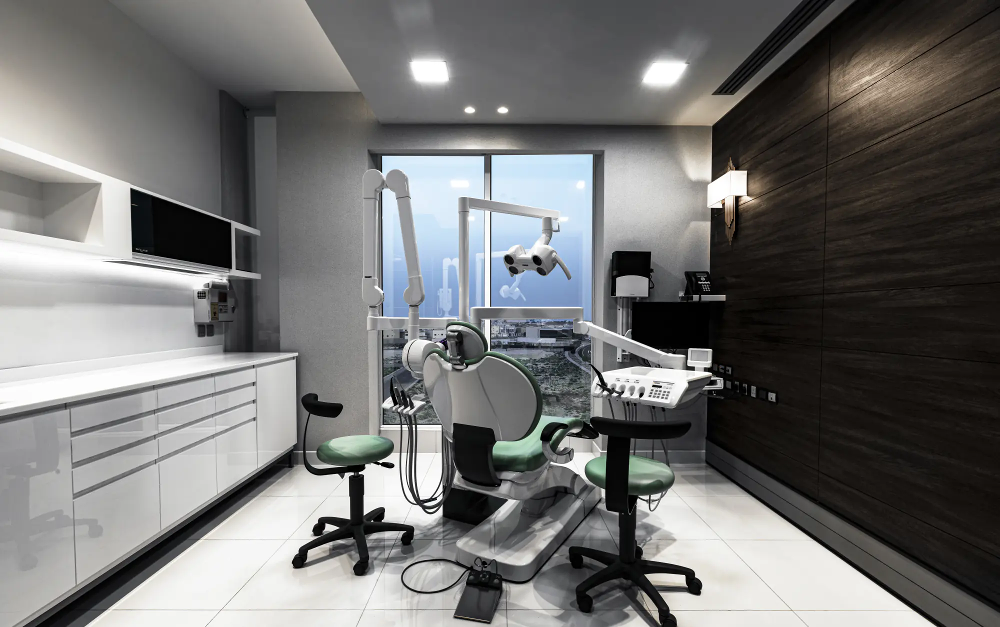
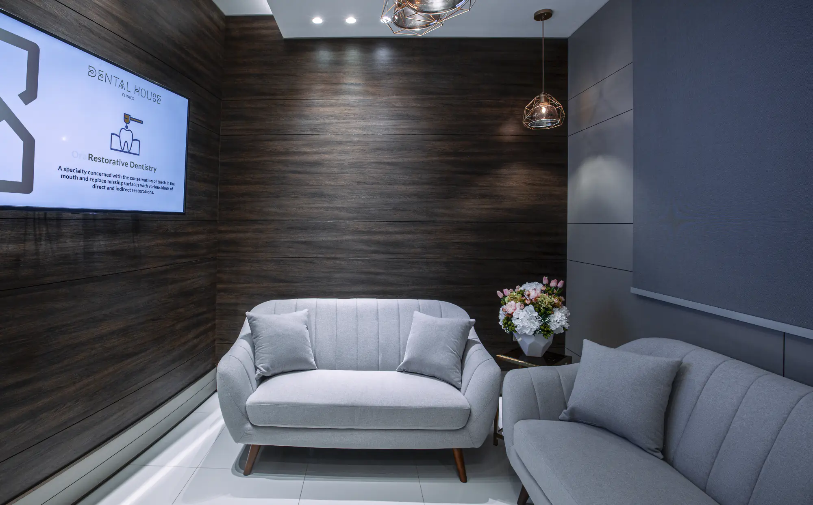
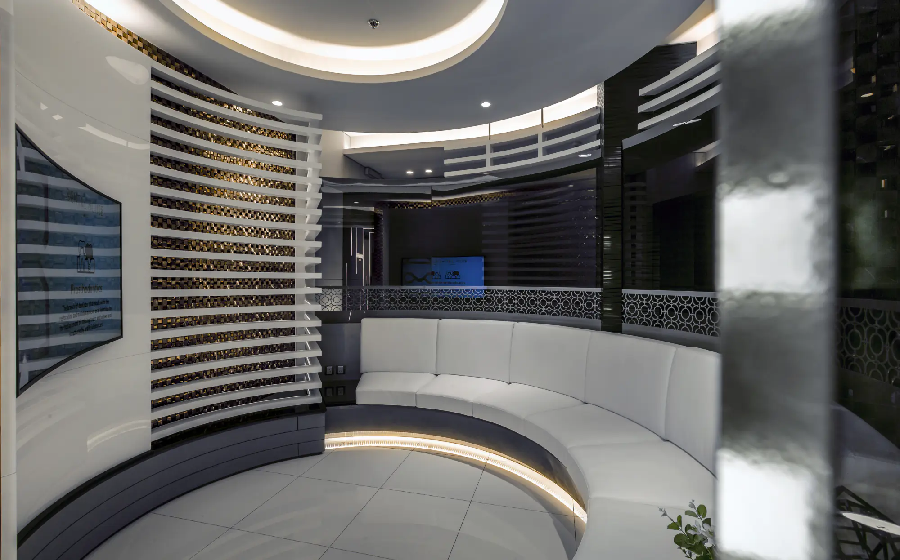

التقويم الشفاف (انڤزالاين)
من أحدث تقنيات التقويم، ولا يؤثر على مجريات حياتك. المصففات شفافة وتُنزع عند الأكل، وتنظيف الأسنان معها سهل، فتقل احتمالية التسوس والتهاب اللثة خلال العلاج، والزيارات للعيادة أقل.
الرئيسية / الخدمات
ما الذي تتضمنه كل خدمة، بكلام واضح، ومن يقدمها من أطبائنا. اتصل بنا إن لم تكن متأكداً مما تحتاجه.


تشخيص ومعالجة عيوب إطباق الأسنان وارتصاصها، وتناغم الفكين والوجه، لدى الأطفال والكبار.
مع د. سليمان شاهين ود. إبراهيم العرفج ود. عايض القحطاني
من أحدث تقنيات التقويم، ولا يؤثر على مجريات حياتك. المصففات شفافة وتُنزع عند الأكل، وتنظيف الأسنان معها سهل، فتقل احتمالية التسوس والتهاب اللثة خلال العلاج، والزيارات للعيادة أقل.
الأسلوب التقليدي، ويعالج جميع حالات التقويم. تُثبَّت القطع المعدنية على الأسنان لتساعد على اصطفافها. ثابت، وحل مثالي لمن لا يفضّل الأجهزة المتحركة.
ثابت مثل التقويم المعدني، لكنه من السيراميك بلون قريب جداً من لون الأسنان فيصعب ملاحظته. حل للبالغين الحريصين على مظهر أنيق خلال العلاج.

لكل من فقد أو سيفقد سناً أو مجموعة من الأسنان.
مع د. فراس القرعاوي ود. فارس الشهراني ود. حمد الرميح ود. محمد القحطاني ود. عبدالكريم الحميدان
تتم الزراعة تحت تخدير موضعي مع وضع تلبيسة مؤقتة.
ينمو العظم حول الزرعة ويثبّتها.
تلبيسة ثابتة مماثلة للأسنان الطبيعية في المظهر والوظيفة.


من أكثر الطرق شيوعاً للحصول على ابتسامة براقة وطبيعية، لدى مختص تجميل الأسنان. وله طريقتان:
مع د. فراس القرعاوي ود. فارس الشهراني ود. حمد الرميح
قوالب تُصنع في معمل الأسنان من طبعات مماثلة لفمك وأسنانك. تضع مادة التبييض فيها وتلبسها في البيت لمدة معينة، وتظهر النتائج عادة مع الاستخدام الصحيح المستمر بعد 10 إلى 15 يوماً.
تُوضع مادة التبييض على أسطح الأسنان ويُسلَّط عليها ضوء خاص لتفعيلها، حتى تصل إلى درجة التبييض المطلوبة.

نهتم بصحة الفم والأسنان للأطفال وذوي الاحتياجات الخاصة، بتقديم الخدمات الوقائية والعلاجية المناسبة لهم حسب المرحلة العمرية. وفي العيادة جهاز الغاز الضاحك.
مع د. مازن القحطاني ود. هدى المنديل
احجز موعداً لطفلكإصلاح الأسنان والمحافظة على وظيفتها وتجميلها، بتعويض الأسنان المفقودة وبعض أجزاء الفم بتركيبات صناعية.
مع د. فراس القرعاوي، د. فارس الشهراني، د. حمد الرميحتشخيص وعلاج عصب الأسنان، وغالباً بإزالة العصب المصاب وحشو التجويف العصبي بمواد خاصة.
مع د. منال السعدونالمحافظة على الأسنان وإصلاح الأسطح المصابة فيها بأنواع مختلفة من الحشوات، للاستفادة من وظائفها الغذائية والجمالية.
تشخيص الأمراض التي تصيب الأنسجة الرخوة والعظمية حول الأسنان وعلاجها والمحافظة عليها، وتعويض المفقود منها بزراعة الأسنان.
مع د. محمد القحطاني، د. عبدالكريم الحميدانعلاج الكثير من الأمراض والعيوب الخلقية والإصابات في منطقة الرأس والرقبة والوجه والفكين جراحياً، ويشمل أضراس العقل المطمورة وزراعة العظم.

صحة الفم ضرورية لصحتك عموماً. التنظيف يزيل الترسبات المتراكمة على أسطح الأسنان من الخارج والداخل، وننصح بتنظيف دوري كل ستة أشهر.
طب أسنان الأسرة مع د. يوسف الحميدأخبر الاستقبال بما تشكو منه ونحجز لك عند الطبيب المناسب. السبت إلى الخميس، 2 ظهراً إلى 10 مساءً.